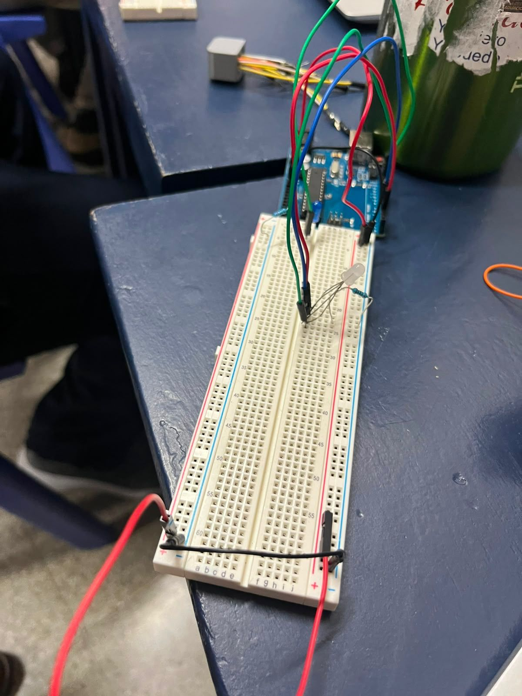
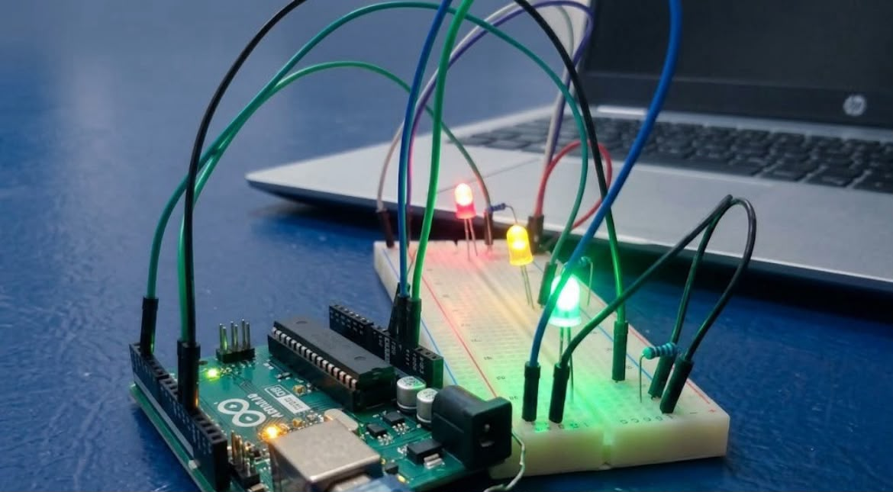

Contenidos de la página WEB
Tarea: Investigación de Conceptos
A continuación se presenta el documento PDF con los detalles de la unidad:
Reflexión Semanal: Video de Evidencia
En esta sección puedes observar el video explicativo de las actividades realizadas en clase:
Semana 3: Desarrollo y Evidencias del Proyecto
En esta sección se muestra una imagen relacionada con las actividades y avances realizados durante la semana.

Semana 4
Creamos un circuito simulando un semáforo.

Semana 5
Creamos un circuito simulando un semáforo.

Semana 6
Creamos un circuito con un sensor Ultrasónico que prende luz LED de diferentes colores y esto depende de la distancia que se encuentre.
Semana 7
Creamos un circuito que dependiendo del movimiento de las personas se activa. Es una simulación de las escaleras eléctricas.